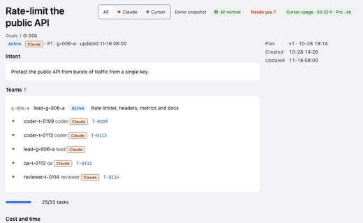

Reference / Merge policy
A fresh judge.
A merge by rule.
A fresh, read-only judge decides whether the diff does what the spec asked and nothing else. Then the runner merges only if every mechanical check passes.
Read a merge recordMerge decision
Try the checks
Assumes a risk tier of T2 or lower and a green main branch.
CI must be green before the judge starts. A judge MERGE on the current head lets the runner merge. A REJECT goes back to the same task session; a HOLD waits for you.
Judge decision
Await the judge
CI is green. A fresh judge reads the packet.
Who decides what
Separate work.
Code merges.
- Task session
- Implements the task, runs the tests and /code-review, fixes the findings and opens the PR. It cannot merge.
- Stop-hook gate
- Code, not a model. Checks the tree, the PR body, the review findings and the evidence, and re-runs every test and command proof before the session may stop.
- Judge
- A fresh, read-only session that never wrote the code. It maps every behaviour change in the diff to a criterion and answers MERGE, REJECT or HOLD.
- Runner
- Code, not a model. Merges with
--match-head-commitonly on a judge MERGE for the exact head and green checks.
The merge checks
What must be true.
- Unasked changes
- Every behaviour change must quote the criterion that asks for it. A change with none turns a MERGE into a REJECT. We added this after a pilot where the judge passed three side effects nobody asked for.
- Head and checks
- A judge MERGE on this exact head, no conflict, the base merged in, and green, complete PR checks.
- Risk and main
- A risk tier of T2 or lower; a T3 diff waits for you. Main is not frozen, and its last push run is green.
- Rounds and revert
judge_rounds_maxandci_rounds_maxcap the rounds before a task goes to you.auto_revertcan open a revert PR when a merge turns main red.
Legacy pipeline demo / G-001
A pricing table
takes two tries.
This fictional record comes from the legacy pipeline, with a separate reviewer and QA. The reviewer rejects the first attempt on task T-0003; on the revised commit both pass and pull request #102 merges. The task keeps both attempts.
Read the task history